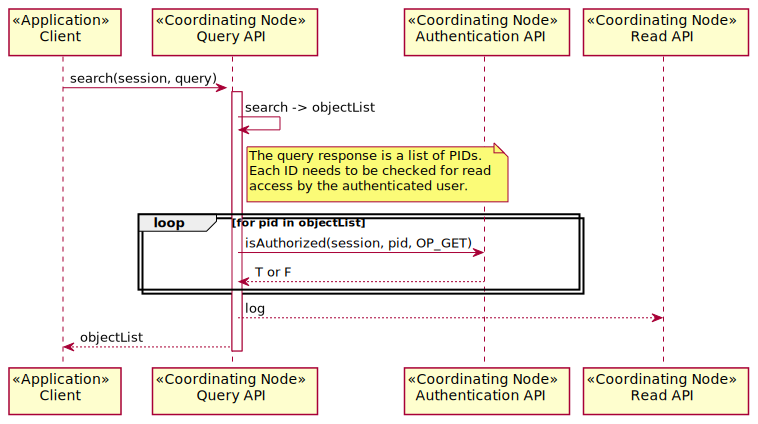

Use Case 02 - List PIDs By Search¶
Contents
Summary¶
A user performs a search against the DataONE system and receives a list of object identifiers (PIDs) that match the search criteria. The list of PIDs is filtered such that only objects for which the user has read permission will be returned.
Content discovery in DataONE is achieved primarily through the service interfaces provided by the Coordinating Nodes. Other systems may index content available in DataONE (UC34), though the operation of those systems is out of scope for DataONE operations except that the exposed APIs enable such functionality.
Actors¶
Client performing search operation
Coordinating Node
Figure 1. Actors and dependencies for Use Case 02.
Preconditions¶
Client has authenticated to at the desired level (e.g. client may not have authenticated, so access might be anonymous).
Post Conditions¶
The client has a list of PIDs (
Types.objectList) for which they have permission to read and match the supplied query or an error condition.The log is updated with information about the request
Implementation¶
Figure 2. Interaction diagram for Use Case 02. The process for determining READ access is for illustration purposes only. Actually implementation may vary (e.g. by augmenting the query used for searching).
Examples¶
Search is implemented by the Coordinating Nodes and optionally by Member Nodes. Two discovery endpoints are provided by Coordinating Nodes: query and search. The search endpoint provides a response that is more constrained than the search endpoint, with only an ObjetList structure being returned. It is recommended that general searches be performed against the query endpoint.
The following examples assume a Coordinating Node base URL is set in the ${NODE} variable, for example:
export NODE="https://cn.dataone.org/cn"
Note
For more example queries and detailed description of the various fields, please visit Content Discovery
Note
The actual response XML may be more compressed than the examples below show. For easier viewing, pipe the response throug the xmlstarlet command line tool using the format (“fo”) option. For example:
curl ${NODE}/v1/query | xml fo
Discover Available Query Engines¶
To discover the query engines (search indexes) supported on the node:
$ curl ${NODE}/v1/query
<?xml version="1.0" encoding="UTF-8"?>
<?xml-stylesheet type="text/xsl" href="/cn/xslt/dataone.types.v1.xsl"?>
<d1_v1.1:queryEngineList
xmlns:d1="http://ns.dataone.org/service/types/v1"
xmlns:d1_v1.1="http://ns.dataone.org/service/types/v1.1">
<queryEngine>solr</queryEngine>
<queryEngine>logsolr</queryEngine>
</d1_v1.1:queryEngineList>
The response show two query engines available solr and logsolr. The
solr query engine provides access to content (data, metadata, resource maps)
that have been indexed by the Coordinating Nodes. The logsolr endpoint
provides access to log records that have been aggregated by the Coordinating
Nodes.
List Search Fields Offered¶
To determine the search fields provided by a query engine, append the value of a
queryEngine element to the url:
$ curl ${NODE}/v1/query/solr
<?xml version="1.0" encoding="UTF-8"?>
<?xml-stylesheet type="text/xsl" href="/cn/xslt/dataone.types.v1.xsl"?>
<d1_v1.1:queryEngineDescription
xmlns:d1="http://ns.dataone.org/service/types/v1"
xmlns:d1_v1.1="http://ns.dataone.org/service/types/v1.1">
<queryEngineVersion>3.4.0.2011.09.20.17.19.53</queryEngineVersion>
<querySchemaVersion>1.1</querySchemaVersion>
<name>solr</name>
<additionalInfo>https://releases.dataone.org/online/api-documentation-v1.2.0/
</additionalInfo>
<queryField>
<name>abstract</name>
<description>The full text of the abstract as provided in the science
metadata document.</description>
<type>text</type>
<searchable>true</searchable>
<returnable>true</returnable>
<sortable>true</sortable>
<multivalued>false</multivalued>
</queryField>
<queryField>
<name>attribute</name>
<description>Multi-valued field containing the text from attributeName,
attributeLabel, attributeDescription, attributeUnit fields into a single
searchable text field.</description>
<type>text</type>
<searchable>true</searchable>
<returnable>true</returnable>
<sortable>true</sortable>
<multivalued>true</multivalued>
</queryField>
<queryField>
<name>attributeDescription</name>
<description>Multi-valued field containing the attribute descriptive
text.</description>
<type>text</type>
<searchable>true</searchable>
<returnable>true</returnable>
<sortable>true</sortable>
<multivalued>true</multivalued>
</queryField>
<queryField>
<name>attributeLabel</name>
<description>Multi-valued field containing secondary attribute name
information.</description>
<type>string</type>
<searchable>true</searchable>
<returnable>true</returnable>
<sortable>true</sortable>
<multivalued>true</multivalued>
</queryField>
...
</d1_v1.1:queryEngineDescription>
Full Text Search¶
The solr endpoint supports standard solr query syntax and construct. To search all text for the string “water”, the query “text:water” could be used. Expressed as a command line request:
$ curl "${NODE}/v1/query/solr/?q=text:water"
<?xml version="1.0" encoding="UTF-8"?>
<response>
<lst name="responseHeader">
<int name="status">0</int>
<int name="QTime">5</int>
<lst name="params">
<str name="q">text:water</str>
<str name="rows">1</str>
</lst>
</lst>
<result name="response" numFound="139455" start="0">
<doc>
...
</doc>
</result>
</response>
which indicates there were 139455 matches. The response is the standard solr XML
response (json may be returned by adding &wt=json to the url), with
<doc> elements holding the actual response records.
Limiting Returned Fields¶
The default solr response returns all fields of the doc records which can be
quite verbose. To limit the response, against the standard solr syntax is used
with the fl parameter. For example, to return only the record identifier
(PID) and the date the system metadata was last modified:
$ curl "${NODE}/v1/query/solr/?q=text:water&fl=id,dateModified"
<?xml version="1.0" encoding="UTF-8"?>
<response>
<lst name="responseHeader">
<int name="status">0</int>
<int name="QTime">4</int>
<lst name="params">
<str name="fl">id,dateModified</str>
<str name="q">text:water</str>
<str name="row">5</str>
</lst>
</lst>
<result name="response" numFound="139455" start="0">
<doc>
<date name="dateModified">2015-03-20T23:18:10.507Z</date>
<str name="id">https://pasta.lternet.edu/package/metadata/eml/knb-lter-gce/249/34</str>
</doc>
<doc>
<date name="dateModified">2012-06-26T13:50:33.75Z</date>
<str name="id">doi:10.6073/AA/knb-lter-gce.249.23</str>
</doc>
<doc>
<date name="dateModified">2012-06-26T13:51:00.556Z</date>
<str name="id">doi:10.6073/AA/knb-lter-gce.249.16</str>
</doc>
<doc>
<date name="dateModified">2012-06-26T13:50:21.131Z</date>
<str name="id">doi:10.6073/AA/knb-lter-gce.249.19</str>
</doc>
...
</result>
</response>
Paging Response Records¶
The solr rows parameter limits the number of records that are returned in a
response, and the start parameter indicates the 0-based offset of the first
records from the start of the set of matching results. For example the second
page of records with five results per page would use start=5 and
count=5:
$ curl "${NODE}/v1/query/solr/?q=text:water&fl=id,dateModified&start=5&rows=5"
<?xml version="1.0" encoding="UTF-8"?>
<response>
<lst name="responseHeader">
<int name="status">0</int>
<int name="QTime">3</int>
<lst name="params">
<str name="fl">id,dateModified</str>
<str name="start">5</str>
<str name="q">text:water</str>
<str name="rows">5</str>
</lst>
</lst>
<result name="response" numFound="139455" start="5">
<doc>
<date name="dateModified">2012-06-26T13:51:00.556Z</date>
<str name="id">doi:10.6073/AA/knb-lter-gce.249.16</str>
</doc>
<doc>
<date name="dateModified">2012-06-26T13:50:21.131Z</date>
<str name="id">doi:10.6073/AA/knb-lter-gce.249.19</str>
</doc>
<doc>
<date name="dateModified">2012-06-26T13:49:54.779Z</date>
<str name="id">doi:10.6073/AA/knb-lter-gce.249.21</str>
</doc>
<doc>
<date name="dateModified">2012-06-26T13:49:54.409Z</date>
<str name="id">doi:10.6073/AA/knb-lter-gce.249.22</str>
</doc>
<doc>
<date name="dateModified">2012-06-26T17:09:59.721Z</date>
<str name="id">doi:10.6073/AA/knb-lter-gce.249.17</str>
</doc>
</result>
</response>